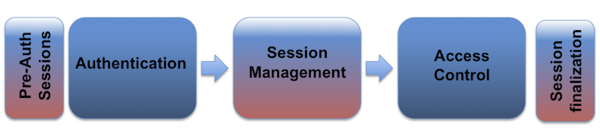

Session Management Cheat Sheet¶
Introduction¶
Web Authentication, Session Management, and Access Control:
A web session is a sequence of network HTTP request and response transactions associated with the same user. Modern and complex web applications require the retaining of information or status about each user for the duration of multiple requests. Therefore, sessions provide the ability to establish variables – such as access rights and localization settings – which will apply to each and every interaction a user has with the web application for the duration of the session.
Web applications can create sessions to keep track of anonymous users after the very first user request. An example would be maintaining the user language preference. Additionally, web applications will make use of sessions once the user has authenticated. This ensures the ability to identify the user on any subsequent requests as well as being able to apply security access controls, authorized access to the user private data, and to increase the usability of the application. Therefore, current web applications can provide session capabilities both pre and post authentication.
Once an authenticated session has been established, the session ID (or token) is temporarily equivalent to the strongest authentication method used by the application, such as username and password, passphrases, one-time passwords (OTP), client-based digital certificates, smartcards, or biometrics (such as fingerprint or eye retina). See the OWASP Authentication Cheat Sheet.
HTTP is a stateless protocol (RFC2616 section 5), where each request and response pair is independent of other web interactions. Therefore, in order to introduce the concept of a session, it is required to implement session management capabilities that link both the authentication and access control (or authorization) modules commonly available in web applications:

The session ID or token binds the user authentication credentials (in the form of a user session) to the user HTTP traffic and the appropriate access controls enforced by the web application. The complexity of these three components (authentication, session management, and access control) in modern web applications, plus the fact that its implementation and binding resides on the web developer's hands (as web development frameworks do not provide strict relationships between these modules), makes the implementation of a secure session management module very challenging.
The disclosure, capture, prediction, brute force, or fixation of the session ID will lead to session hijacking (or sidejacking) attacks, where an attacker is able to fully impersonate a victim user in the web application. Attackers can perform two types of session hijacking attacks, targeted or generic. In a targeted attack, the attacker's goal is to impersonate a specific (or privileged) web application victim user. For generic attacks, the attacker's goal is to impersonate (or get access as) any valid or legitimate user in the web application.
Session ID Properties¶
In order to keep the authenticated state and track the users progress within the web application, applications provide users with a session identifier (session ID or token) that is assigned at session creation time, and is shared and exchanged by the user and the web application for the duration of the session (it is sent on every HTTP request). The session ID is a name=value pair.
With the goal of implementing secure session IDs, the generation of identifiers (IDs or tokens) must meet the following properties.
Session ID Name Fingerprinting¶
The name used by the session ID should not be extremely descriptive nor offer unnecessary details about the purpose and meaning of the ID.
The session ID names used by the most common web application development frameworks can be easily fingerprinted, such as PHPSESSID (PHP), JSESSIONID (J2EE), CFID & CFTOKEN (ColdFusion), ASP.NET_SessionId (ASP .NET), etc. Therefore, the session ID name can disclose the technologies and programming languages used by the web application.
It is recommended to change the default session ID name of the web development framework to a generic name, such as id.
Session ID Length¶
The session ID must be long enough to prevent brute force attacks, where an attacker can go through the whole range of ID values and verify the existence of valid sessions.
The session ID length must be at least 128 bits (16 bytes).
NOTE:
- The session ID length of 128 bits is provided as a reference based on the assumptions made on the next section Session ID Entropy. However, this number should not be considered as an absolute minimum value, as other implementation factors might influence its strength.
- For example, there are well-known implementations, such as Microsoft ASP.NET session IDs: "The ASP .NET session identifier is a randomly generated number encoded into a 24-character string consisting of lowercase characters from a to z and numbers from 0 to 5".
- It can provide a very good effective entropy, and as a result, can be considered long enough to avoid guessing or brute force attacks.
Session ID Entropy¶
The session ID must be unpredictable (random enough) to prevent guessing attacks, where an attacker is able to guess or predict the ID of a valid session through statistical analysis techniques. For this purpose, a good CSPRNG (Cryptographically Secure Pseudorandom Number Generator) must be used.
The session ID value must provide at least 64 bits of entropy (if a good PRNG is used, this value is estimated to be half the length of the session ID).
Additionally, a random session ID is not enough; it must also be unique to avoid duplicated IDs. A random session ID must not already exist in the current session ID space.
NOTE:
- The session ID entropy is really affected by other external and difficult to measure factors, such as the number of concurrent active sessions the web application commonly has, the absolute session expiration timeout, the amount of session ID guesses per second the attacker can make and the target web application can support, etc.
- If a session ID with an entropy of
64 bitsis used, it will take an attacker at least 292 years to successfully guess a valid session ID, assuming the attacker can try 10,000 guesses per second with 100,000 valid simultaneous sessions available in the web application. - More information here.
Session ID Content (or Value)¶
The session ID content (or value) must be meaningless to prevent information disclosure attacks, where an attacker is able to decode the contents of the ID and extract details of the user, the session, or the inner workings of the web application.
The session ID must simply be an identifier on the client side, and its value must never include sensitive information (or PII).
The meaning and business or application logic associated with the session ID must be stored on the server side, and specifically, in session objects or in a session management database or repository.
The stored information can include the client IP address, User-Agent, e-mail, username, user ID, role, privilege level, access rights, language preferences, account ID, current state, last login, session timeouts, and other internal session details. If the session objects and properties contain sensitive information, such as credit card numbers, it is required to duly encrypt and protect the session management repository.
It is recommended to create cryptographically strong session IDs through the usage of cryptographic hash functions such as SHA256.
Session Management Implementation¶
The session management implementation defines the exchange mechanism that will be used between the user and the web application to share and continuously exchange the session ID. There are multiple mechanisms available in HTTP to maintain session state within web applications, such as cookies (standard HTTP header), URL parameters (URL rewriting – RFC2396), URL arguments on GET requests, body arguments on POST requests, such as hidden form fields (HTML forms), or proprietary HTTP headers.
The preferred session ID exchange mechanism should allow defining advanced token properties, such as the token expiration date and time, or granular usage constraints. This is one of the reasons why cookies (RFCs 2109 & 2965 & 6265) are one of the most extensively used session ID exchange mechanisms, offering advanced capabilities not available in other methods.
The usage of specific session ID exchange mechanisms, such as those where the ID is included in the URL, might disclose the session ID (in web links and logs, web browser history and bookmarks, the Referer header or search engines), as well as facilitate other attacks, such as the manipulation of the ID or session fixation attacks.
Built-in Session Management Implementations¶
Web development frameworks, such as J2EE, ASP .NET, PHP, and others, provide their own session management features and associated implementation. It is recommended to use these built-in frameworks versus building a home made one from scratch, as they are used worldwide on multiple web environments and have been tested by the web application security and development communities over time.
However, be advised that these frameworks have also presented vulnerabilities and weaknesses in the past, so it is always recommended to use the latest version available, that potentially fixes all the well-known vulnerabilities, as well as review and change the default configuration to enhance its security by following the recommendations described along this document.
The storage capabilities or repository used by the session management mechanism to temporarily save the session IDs must be secure, protecting the session IDs against local or remote accidental disclosure or unauthorized access.
Used vs. Accepted Session ID Exchange Mechanisms¶
A web application should make use of cookies for session ID exchange management. If a user submits a session ID through a different exchange mechanism, such as a URL parameter, the web application should avoid accepting it as part of a defensive strategy to stop session fixation.
NOTE:
- Even if a web application makes use of cookies as its default session ID exchange mechanism, it might accept other exchange mechanisms too.
- It is therefore required to confirm via thorough testing all the different mechanisms currently accepted by the web application when processing and managing session IDs, and limit the accepted session ID tracking mechanisms to just cookies.
- In the past, some web applications used URL parameters, or even switched from cookies to URL parameters (via automatic URL rewriting), if certain conditions are met (for example, the identification of web clients without support for cookies or not accepting cookies due to user privacy concerns).
Transport Layer Security¶
In order to protect the session ID exchange from active eavesdropping and passive disclosure in the network traffic, it is essential to use an encrypted HTTPS (TLS) connection for the entire web session, not only for the authentication process where the user credentials are exchanged.
Additionally, the Secure cookie attribute must be used to ensure the session ID is only exchanged through an encrypted channel. The usage of an encrypted communication channel also protects the session against some session fixation attacks where the attacker is able to intercept and manipulate the web traffic to inject (or fix) the session ID on the victim's web browser (see here and here).
The following set of best practices are focused on protecting the session ID (specifically when cookies are used) and helping with the integration of HTTPS within the web application:
- Do not switch a given session from HTTP to HTTPS, or vice-versa, as this will disclose the session ID in the clear through the network.
- When redirecting to HTTPS, ensure that the cookie is set or regenerated after the redirect has occurred.
- Do not mix encrypted and unencrypted contents (HTML pages, images, CSS, JavaScript files, etc) in the same page, or from the same domain.
- Where possible, avoid offering public unencrypted contents and private encrypted contents from the same host. Where insecure content is required, consider hosting this on a separate insecure domain.
- Implement HTTP Strict Transport Security (HSTS) to enforce HTTPS connections.
See the OWASP Transport Layer Protection Cheat Sheet for more general guidance on implementing TLS securely.
It is important to emphasize that TLS does not protect against session ID prediction, brute force, client-side tampering or fixation; however, it does provide effective protection against an attacker intercepting or stealing session IDs through a man in the middle attack.
Cookies¶
The session ID exchange mechanism based on cookies provides multiple security features in the form of cookie attributes that can be used to protect the exchange of the session ID:
Secure Attribute¶
The Secure cookie attribute instructs web browsers to only send the cookie through an encrypted HTTPS (SSL/TLS) connection. This session protection mechanism is mandatory to prevent the disclosure of the session ID through MitM (Man-in-the-Middle) attacks. It ensures that an attacker cannot simply capture the session ID from web browser traffic.
Forcing the web application to only use HTTPS for its communication (even when port TCP/80, HTTP, is closed in the web application host) does not protect against session ID disclosure if the Secure cookie has not been set - the web browser can be deceived to disclose the session ID over an unencrypted HTTP connection. The attacker can intercept and manipulate the victim user traffic and inject an HTTP unencrypted reference to the web application that will force the web browser to submit the session ID in the clear.
See also: SecureFlag
HttpOnly Attribute¶
The HttpOnly cookie attribute instructs web browsers not to allow scripts (e.g. JavaScript or VBscript) an ability to access the cookies via the DOM document.cookie object. This session ID protection is mandatory to prevent session ID stealing through XSS attacks. However, if an XSS attack is combined with a CSRF attack, the requests sent to the web application will include the session cookie, as the browser always includes the cookies when sending requests. The HttpOnly cookie only protects the confidentiality of the cookie; the attacker cannot use it offline, outside of the context of an XSS attack.
See the OWASP XSS (Cross Site Scripting) Prevention Cheat Sheet.
See also: HttpOnly
SameSite Attribute¶
SameSite allows a server define a cookie attribute making it impossible to the browser send this cookie along with cross-site requests. The main goal is to mitigate the risk of cross-origin information leakage, and provides some protection against cross-site request forgery attacks.
See also: SameSite
Domain and Path Attributes¶
The Domain cookie attribute instructs web browsers to only send the cookie to the specified domain and all subdomains. If the attribute is not set, by default the cookie will only be sent to the origin server. The Path cookie attribute instructs web browsers to only send the cookie to the specified directory or subdirectories (or paths or resources) within the web application. If the attribute is not set, by default the cookie will only be sent for the directory (or path) of the resource requested and setting the cookie.
It is recommended to use a narrow or restricted scope for these two attributes. In this way, the Domain attribute should not be set (restricting the cookie just to the origin server) and the Path attribute should be set as restrictive as possible to the web application path that makes use of the session ID.
Setting the Domain attribute to a too permissive value, such as example.com allows an attacker to launch attacks on the session IDs between different hosts and web applications belonging to the same domain, known as cross-subdomain cookies. For example, vulnerabilities in www.example.com might allow an attacker to get access to the session IDs from secure.example.com.
Additionally, it is recommended not to mix web applications of different security levels on the same domain. Vulnerabilities in one of the web applications would allow an attacker to set the session ID for a different web application on the same domain by using a permissive Domain attribute (such as example.com) which is a technique that can be used in session fixation attacks.
Although the Path attribute allows the isolation of session IDs between different web applications using different paths on the same host, it is highly recommended not to run different web applications (especially from different security levels or scopes) on the same host. Other methods can be used by these applications to access the session IDs, such as the document.cookie object. Also, any web application can set cookies for any path on that host.
Cookies are vulnerable to DNS spoofing/hijacking/poisoning attacks, where an attacker can manipulate the DNS resolution to force the web browser to disclose the session ID for a given host or domain.
Expire and Max-Age Attributes¶
Session management mechanisms based on cookies can make use of two types of cookies, non-persistent (or session) cookies, and persistent cookies. If a cookie presents the Max-Age (that has preference over Expires) or Expires attributes, it will be considered a persistent cookie and will be stored on disk by the web browser based until the expiration time.
Typically, session management capabilities to track users after authentication make use of non-persistent cookies. This forces the session to disappear from the client if the current web browser instance is closed. Therefore, it is highly recommended to use non-persistent cookies for session management purposes, so that the session ID does not remain on the web client cache for long periods of time, from where an attacker can obtain it.
- Ensure that sensitive information is not comprised, by ensuring that sensitive information is not persistent / encrypting / stored on a need basis for the duration of the need
- Ensure that unauthorized activities cannot take place via cookie manipulation
- Ensure secure flag is set to prevent accidental transmission over "the wire" in a non-secure manner
- Determine if all state transitions in the application code properly check for the cookies and enforce their use
- Ensure entire cookie should be encrypted if sensitive data is persisted in the cookie
- Define all cookies being used by the application, their name and why they are needed
HTML5 Web Storage API¶
The Web Hypertext Application Technology Working Group (WHATWG) describes the HTML5 Web Storage APIs, localStorage and sessionStorage, as mechanisms for storing name-value pairs client-side.
Unlike HTTP cookies, the contents of localStorage and sessionStorage are not automatically shared within requests or responses by the browser and are used for storing data client-side.
The localStorage API¶
Scope¶
Data stored using the localStorage API is accessible by pages which are loaded from the same origin, which is defined as the scheme (https://), host (example.com), port (443) and domain/realm (example.com).
This provides similar access to this data as would be achieved by using the secure flag on a cookie, meaning that data stored from https could not be retrieved via http. Due to potential concurrent access from separate windows/threads, data stored using localStorage may be susceptible to shared access issues (such as race-conditions) and should be considered non-locking (Web Storage API Spec).
Duration¶
Data stored using the localStorage API is persisted across browsing sessions, extending the timeframe in which it may be accessible to other system users.
Offline Access¶
The standards do not require localStorage data to be encrypted-at-rest, meaning it may be possible to directly access this data from disk.
Use Case¶
WHATWG suggests the use of localStorage for data that needs to be accessed across windows or tabs, across multiple sessions, and where large (multi-megabyte) volumes of data may need to be stored for performance reasons.
The sessionStorage API¶
Scope¶
The sessionStorage API stores data within the window context from which it was called, meaning that Tab 1 cannot access data which was stored from Tab 2.
Also, like the localStorage API, data stored using the sessionStorage API is accessible by pages which are loaded from the same origin, which is defined as the scheme (https://), host (example.com), port (443) and domain/realm (example.com).
This provides similar access to this data as would be achieved by using the secure flag on a cookie, meaning that data stored from https could not be retrieved via http.
Duration¶
The sessionStorage API only stores data for the duration of the current browsing session. Once the tab is closed, that data is no longer retrievable. This does not necessarily prevent access, should a browser tab be reused or left open. Data may also persist in memory until a garbage collection event.
Offline Access¶
The standards do not require sessionStorage data to be encrypted-at-rest, meaning it may be possible to directly access this data from disk.
Use Case¶
WHATWG suggests the use of sessionStorage for data that is relevant for one-instance of a workflow, such as details for a ticket booking, but where multiple workflows could be performed in other tabs concurrently. The window/tab bound nature will keep the data from leaking between workflows in separate tabs.
Security Risks¶
In general, secure or sensitive data should not be stored persistently in browser data stores as this may permit information leakage on shared systems. Because the Web Storage mechanisms are APIs, this also permits access from injected scripts, making it less secure than cookies with the httponly flag applied.
While a case could be made for storing workflow specific data in sessionStorage for use by that specific tab/window across reloads, the Web Storage APIs should be treated as insecure storage. Because of this, if a business solution requires the use of the localStorage or sessionStorage to store sensitive data, such a solution should encipher data and apply replay protections.
Due to the potential to access Web Storage APIs via an XSS attack, session identifiers should be stored using non-persistent cookies, with the appropriate flags to protect from insecure access (Secure), XSS (HttpOnly) and CSRF issues (SameSite).
References¶
Web Workers¶
Web Workers run JavaScript code in a global context separate from the one of the current window. A communication channel with the main execution window exists, which is called MessageChannel.
Use Case¶
Web Workers are an alternative for browser storage of (session) secrets when storage persistence across page refresh is not a requirement. For Web Workers to provide secure browser storage, any code that requires the secret should exist within the Web Worker and the secret should never be transmitted to the main window context.
Storing secrets within the memory of a Web Worker offers the same security guarantees as an HttpOnly cookie: the confidentiality of the secret is protected. Still, an XSS attack can be used to send messages to the Web Worker to perform an operation that requires the secret. The Web Worker will return the result of the operation to the main execution thread.
The advantage of a Web Worker implementation compared to an HttpOnly cookie is that a Web Worker allows for some isolated JavaScript code to access the secret; an HttpOnly cookie is not accessible to any JavaScript. If the frontend JavaScript code requires access to the secret, the Web Worker implementation is the only browser storage option that preserves the secret confidentiality.
Session ID Life Cycle¶
Session ID Generation and Verification: Permissive and Strict Session Management¶
There are two types of session management mechanisms for web applications, permissive and strict, related to session fixation vulnerabilities. The permissive mechanism allows the web application to initially accept any session ID value set by the user as valid, creating a new session for it, while the strict mechanism enforces that the web application will only accept session ID values that have been previously generated by the web application.
The session tokens should be handled by the web server if possible or generated via a cryptographically secure random number generator.
Although the most common mechanism in use today is the strict one (more secure, PHP defaults to permissive). Developers must ensure that the web application does not use a permissive mechanism under certain circumstances. Web applications should never accept a session ID they have never generated, and in case of receiving one, they should generate and offer the user a new valid session ID. Additionally, this scenario should be detected as a suspicious activity and an alert should be generated.
Manage Session ID as Any Other User Input¶
Session IDs must be considered untrusted, as any other user input processed by the web application, and they must be thoroughly validated and verified. Depending on the session management mechanism used, the session ID will be received in a GET or POST parameter, in the URL or in an HTTP header (e.g. cookies). If web applications do not validate and filter out invalid session ID values before processing them, they can potentially be used to exploit other web vulnerabilities, such as SQL injection if the session IDs are stored on a relational database, or persistent XSS if the session IDs are stored and reflected back afterwards by the web application.
Renew the Session ID After Any Privilege Level Change¶
The session ID must be renewed or regenerated by the web application after any privilege level change within the associated user session. The most common scenario where the session ID regeneration is mandatory is during the authentication process, as the privilege level of the user changes from the unauthenticated (or anonymous) state to the authenticated state. Other common scenarios must also be considered, such as password changes, permission changes or switching from a regular user role to an administrator role within the web application. For all these web application critical pages, previous session IDs have to be ignored, a new session ID must be assigned to every new request received for the critical resource, and the old or previous session ID must be destroyed.
The most common web development frameworks provide session functions and methods to renew the session ID, such as request.getSession(true) & HttpSession.invalidate() (J2EE), Session.Abandon() & Response.Cookies.Add(new...) (ASP .NET), or session_start() & session_regenerate_id(true) (PHP).
The session ID regeneration is mandatory to prevent session fixation attacks, where an attacker sets the session ID on the victims user web browser instead of gathering the victims session ID, as in most of the other session-based attacks, and independently of using HTTP or HTTPS. This protection mitigates the impact of other web-based vulnerabilities that can also be used to launch session fixation attacks, such as HTTP response splitting or XSS (see here and here).
A complementary recommendation is to use a different session ID or token name (or set of session IDs) pre and post authentication, so that the web application can keep track of anonymous users and authenticated users without the risk of exposing or binding the user session between both states.
Considerations When Using Multiple Cookies¶
If the web application uses cookies as the session ID exchange mechanism, and multiple cookies are set for a given session, the web application must verify all cookies (and enforce relationships between them) before allowing access to the user session.
It is very common for web applications to set a user cookie pre-authentication over HTTP to keep track of unauthenticated (or anonymous) users. Once the user authenticates in the web application, a new post-authentication secure cookie is set over HTTPS, and a binding between both cookies and the user session is established. If the web application does not verify both cookies for authenticated sessions, an attacker can make use of the pre-authentication unprotected cookie to get access to the authenticated user session (see here and here).
Web applications should try to avoid the same cookie name for different paths or domain scopes within the same web application, as this increases the complexity of the solution and potentially introduces scoping issues.
Session Expiration¶
In order to minimize the time period an attacker can launch attacks over active sessions and hijack them, it is mandatory to set expiration timeouts for every session, establishing the amount of time a session will remain active. Insufficient session expiration by the web application increases the exposure of other session-based attacks, as for the attacker to be able to reuse a valid session ID and hijack the associated session, it must still be active.
The shorter the session interval is, the lesser the time an attacker has to use the valid session ID. The session expiration timeout values must be set accordingly with the purpose and nature of the web application, and balance security and usability, so that the user can comfortably complete the operations within the web application without his session frequently expiring.
Both the idle and absolute timeout values are highly dependent on how critical the web application and its data are. Common idle timeouts ranges are 2-5 minutes for high-value applications and 15-30 minutes for low risk applications. Absolute timeouts depend on how long a user usually uses the application. If the application is intended to be used by an office worker for a full day, an appropriate absolute timeout range could be between 4 and 8 hours.
When a session expires, the web application must take active actions to invalidate the session on both sides, client and server. The latter is the most relevant and mandatory from a security perspective.
For most session exchange mechanisms, client side actions to invalidate the session ID are based on clearing out the token value. For example, to invalidate a cookie it is recommended to provide an empty (or invalid) value for the session ID, and set the Expires (or Max-Age) attribute to a date from the past (in case a persistent cookie is being used): Set-Cookie: id=; Expires=Friday, 17-May-03 18:45:00 GMT
In order to close and invalidate the session on the server side, it is mandatory for the web application to take active actions when the session expires, or the user actively logs out, by using the functions and methods offered by the session management mechanisms, such as HttpSession.invalidate() (J2EE), Session.Abandon() (ASP .NET) or session_destroy()/unset() (PHP).
Automatic Session Expiration¶
Idle Timeout¶
All sessions should implement an idle or inactivity timeout. This timeout defines the amount of time a session will remain active in case there is no activity in the session, closing and invalidating the session upon the defined idle period since the last HTTP request received by the web application for a given session ID.
The idle timeout limits the chances an attacker has to guess and use a valid session ID from another user. However, if the attacker is able to hijack a given session, the idle timeout does not limit the attacker's actions, as he can generate activity on the session periodically to keep the session active for longer periods of time.
Session timeout management and expiration must be enforced server-side. If the client is used to enforce the session timeout, for example using the session token or other client parameters to track time references (e.g. number of minutes since login time), an attacker could manipulate these to extend the session duration.
Absolute Timeout¶
All sessions should implement an absolute timeout, regardless of session activity. This timeout defines the maximum amount of time a session can be active, closing and invalidating the session upon the defined absolute period since the given session was initially created by the web application. After invalidating the session, the user is forced to (re)authenticate again in the web application and establish a new session.
The absolute session limits the amount of time an attacker can use a hijacked session and impersonate the victim user.
Renewal Timeout¶
Alternatively, the web application can implement an additional renewal timeout after which the session ID is automatically renewed, in the middle of the user session, and independently of the session activity and, therefore, of the idle timeout.
After a specific amount of time since the session was initially created, the web application can regenerate a new ID for the user session and try to set it, or renew it, on the client. The previous session ID value would still be valid for some time, accommodating a safety interval, before the client is aware of the new ID and starts using it. At that time, when the client switches to the new ID inside the current session, the application invalidates the previous ID.
This scenario minimizes the amount of time a given session ID value, potentially obtained by an attacker, can be reused to hijack the user session, even when the victim user session is still active. The user session remains alive and open on the legitimate client, although its associated session ID value is transparently renewed periodically during the session duration, every time the renewal timeout expires. Therefore, the renewal timeout complements the idle and absolute timeouts, specially when the absolute timeout value extends significantly over time (e.g. it is an application requirement to keep the user sessions open for long periods of time).
Depending on the implementation, potentially there could be a race condition where the attacker with a still valid previous session ID sends a request before the victim user, right after the renewal timeout has just expired, and obtains first the value for the renewed session ID. At least in this scenario, the victim user might be aware of the attack as her session will be suddenly terminated because her associated session ID is not valid anymore.
Manual Session Expiration¶
Web applications should provide mechanisms that allow security aware users to actively close their session once they have finished using the web application.
Logout Button¶
Web applications must provide a visible and easily accessible logout (logoff, exit, or close session) button that is available on the web application header or menu and reachable from every web application resource and page, so that the user can manually close the session at any time. As described in Session_Expiration section, the web application must invalidate the session at least on server side.
NOTE: Unfortunately, not all web applications facilitate users to close their current session. Thus, client-side enhancements allow conscientious users to protect their sessions by helping to close them diligently.
Web Content Caching¶
Even after the session has been closed, it might be possible to access the private or sensitive data exchanged within the session through the web browser cache. Therefore, web applications must use restrictive cache directives for all the web traffic exchanged through HTTP and HTTPS, such as the Cache-Control and Pragma HTTP headers, and/or equivalent META tags on all or (at least) sensitive web pages.
Independently of the cache policy defined by the web application, if caching web application contents is allowed, the session IDs must never be cached, so it is highly recommended to use the Cache-Control: no-cache="Set-Cookie, Set-Cookie2" directive, to allow web clients to cache everything except the session ID (see here).
Additional Client-Side Defenses for Session Management¶
Web applications can complement the previously described session management defenses with additional countermeasures on the client side. Client-side protections, typically in the form of JavaScript checks and verifications, are not bullet proof and can easily be defeated by a skilled attacker, but can introduce another layer of defense that has to be bypassed by intruders.
Initial Login Timeout¶
Web applications can use JavaScript code in the login page to evaluate and measure the amount of time since the page was loaded and a session ID was granted. If a login attempt is tried after a specific amount of time, the client code can notify the user that the maximum amount of time to log in has passed and reload the login page, hence retrieving a new session ID.
This extra protection mechanism tries to force the renewal of the session ID pre-authentication, avoiding scenarios where a previously used (or manually set) session ID is reused by the next victim using the same computer, for example, in session fixation attacks.
Force Session Logout On Web Browser Window Close Events¶
Web applications can use JavaScript code to capture all the web browser tab or window close (or even back) events and take the appropriate actions to close the current session before closing the web browser, emulating that the user has manually closed the session via the logout button.
Disable Web Browser Cross-Tab Sessions¶
Web applications can use JavaScript code once the user has logged in and a session has been established to force the user to re-authenticate if a new web browser tab or window is opened against the same web application. The web application does not want to allow multiple web browser tabs or windows to share the same session. Therefore, the application tries to force the web browser to not share the same session ID simultaneously between them.
NOTE: This mechanism cannot be implemented if the session ID is exchanged through cookies, as cookies are shared by all web browser tabs/windows.
Automatic Client Logout¶
JavaScript code can be used by the web application in all (or critical) pages to automatically logout client sessions after the idle timeout expires, for example, by redirecting the user to the logout page (the same resource used by the logout button mentioned previously).
The benefit of enhancing the server-side idle timeout functionality with client-side code is that the user can see that the session has finished due to inactivity, or even can be notified in advance that the session is about to expire through a count down timer and warning messages. This user-friendly approach helps to avoid loss of work in web pages that require extensive input data due to server-side silently expired sessions.
Session Attacks Detection¶
Session ID Guessing and Brute Force Detection¶
If an attacker tries to guess or brute force a valid session ID, he needs to launch multiple sequential requests against the target web application using different session IDs from a single (or set of) IP address(es). Additionally, if an attacker tries to analyze the predictability of the session ID (e.g. using statistical analysis), he needs to launch multiple sequential requests from a single (or set of) IP address(es) against the target web application to gather new valid session IDs.
Web applications must be able to detect both scenarios based on the number of attempts to gather (or use) different session IDs and alert and/or block the offending IP address(es).
Detecting Session ID Anomalies¶
Web applications should focus on detecting anomalies associated to the session ID, such as its manipulation. The OWASP AppSensor Project provides a framework and methodology to implement built-in intrusion detection capabilities within web applications focused on the detection of anomalies and unexpected behaviors, in the form of detection points and response actions. Instead of using external protection layers, sometimes the business logic details and advanced intelligence are only available from inside the web application, where it is possible to establish multiple session related detection points, such as when an existing cookie is modified or deleted, a new cookie is added, the session ID from another user is reused, or when the user location or User-Agent changes in the middle of a session.
Binding the Session ID to Other User Properties¶
With the goal of detecting (and, in some scenarios, protecting against) user misbehaviors and session hijacking, it is highly recommended to bind the session ID to other user or client properties, such as the client IP address, User-Agent, or client-based digital certificate. If the web application detects any change or anomaly between these different properties in the middle of an established session, this is a very good indicator of session manipulation and hijacking attempts, and this simple fact can be used to alert and/or terminate the suspicious session.
Although these properties cannot be used by web applications to trustingly defend against session attacks, they significantly increase the web application detection (and protection) capabilities. However, a skilled attacker can bypass these controls by reusing the same IP address assigned to the victim user by sharing the same network (very common in NAT environments, like Wi-Fi hotspots) or by using the same outbound web proxy (very common in corporate environments), or by manually modifying his User-Agent to look exactly as the victim users does.
Logging Sessions Life Cycle: Monitoring Creation, Usage, and Destruction of Session IDs¶
Web applications should increase their logging capabilities by including information regarding the full life cycle of sessions. In particular, it is recommended to record session related events, such as the creation, renewal, and destruction of session IDs, as well as details about its usage within login and logout operations, privilege level changes within the session, timeout expiration, invalid session activities (when detected), and critical business operations during the session.
The log details might include a timestamp, source IP address, web target resource requested (and involved in a session operation), HTTP headers (including the User-Agent and Referer), GET and POST parameters, error codes and messages, username (or user ID), plus the session ID (cookies, URL, GET, POST…).
Sensitive data like the session ID should not be included in the logs in order to protect the session logs against session ID local or remote disclosure or unauthorized access. However, some kind of session-specific information must be logged in order to correlate log entries to specific sessions. It is recommended to log a salted-hash of the session ID instead of the session ID itself in order to allow for session-specific log correlation without exposing the session ID.
In particular, web applications must thoroughly protect administrative interfaces that allow to manage all the current active sessions. Frequently these are used by support personnel to solve session related issues, or even general issues, by impersonating the user and looking at the web application as the user does.
The session logs become one of the main web application intrusion detection data sources, and can also be used by intrusion protection systems to automatically terminate sessions and/or disable user accounts when (one or many) attacks are detected. If active protections are implemented, these defensive actions must be logged too.
Simultaneous Session Logons¶
It is the web application design decision to determine if multiple simultaneous logons from the same user are allowed from the same or from different client IP addresses. If the web application does not want to allow simultaneous session logons, it must take effective actions after each new authentication event, implicitly terminating the previously available session, or asking the user (through the old, new or both sessions) about the session that must remain active.
It is recommended for web applications to add user capabilities that allow checking the details of active sessions at any time, monitor and alert the user about concurrent logons, provide user features to remotely terminate sessions manually, and track account activity history (logbook) by recording multiple client details such as IP address, User-Agent, login date and time, idle time, etc.
Session Management WAF Protections¶
There are situations where the web application source code is not available or cannot be modified, or when the changes required to implement the multiple security recommendations and best practices detailed above imply a full redesign of the web application architecture, and therefore, cannot be easily implemented in the short term.
In these scenarios, or to complement the web application defenses, and with the goal of keeping the web application as secure as possible, it is recommended to use external protections such as Web Application Firewalls (WAFs) that can mitigate the session management threats already described.
Web Application Firewalls offer detection and protection capabilities against session based attacks. On the one hand, it is trivial for WAFs to enforce the usage of security attributes on cookies, such as the Secure and HttpOnly flags, applying basic rewriting rules on the Set-Cookie header for all the web application responses that set a new cookie.
On the other hand, more advanced capabilities can be implemented to allow the WAF to keep track of sessions, and the corresponding session IDs, and apply all kind of protections against session fixation (by renewing the session ID on the client-side when privilege changes are detected), enforcing sticky sessions (by verifying the relationship between the session ID and other client properties, like the IP address or User-Agent), or managing session expiration (by forcing both the client and the web application to finalize the session).
The open-source ModSecurity WAF, plus the OWASP Core Rule Set, provide capabilities to detect and apply security cookie attributes, countermeasures against session fixation attacks, and session tracking features to enforce sticky sessions.